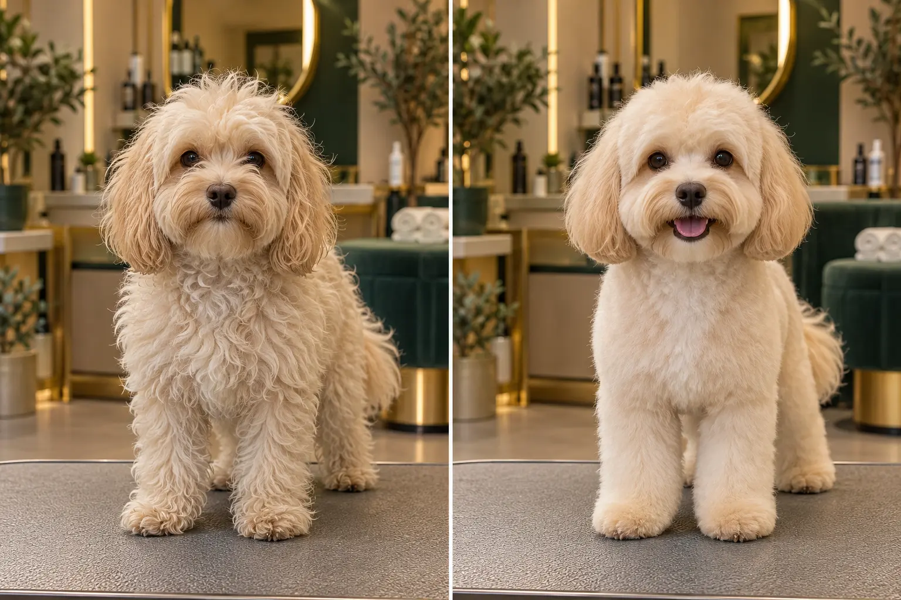

01
Груминг собак
Мытьё, сушка, стрижка, уход за лапами, когтями и ушами. Форма подбирается под породу и образ жизни питомца.
- Комплексный уход
- Гигиеническая или модельная стрижка
- Любой размер питомца

ДОПОСЛЕ